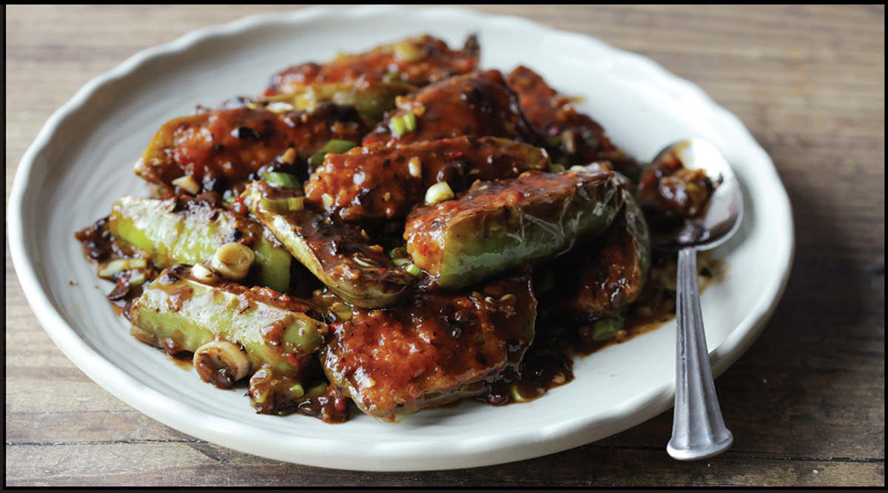

SHRIMP- OR FISH-STUFFED CHILES IN BLACK BEAN SAUCE
|
Yield Serves 4 |
Active Time 25 minutes Total Time 35 minutes |
If you can’t find Chinese long green chiles (also sold as “green horn chile” or “cowhorn chile”), you can use 4 cubanelles, 3 green bell peppers, or 10 to 12 jalapeños in their place. If using bell peppers, split into quarters lengthwise instead of halves. I like serving these chiles in black bean sauce, but you can also serve them with Soy and Fragrant Oil Dipping Sauce (here). If using dipping sauce, omit all the black bean sauce ingredients and step 7.
INGREDIENTS
For the Filling:
12 ounces (340 g) peeled shrimp or mild flaky white fish such as sea bass or hake
1 tablespoon (15 ml) Shaoxing wine
1 tablespoon (15 ml) water
2 tablespoons (about 18 g) cornstarch
1 teaspoon (3 g) kosher salt
½ teaspoon (2 g) sugar
½ teaspoon (1 g) freshly ground white pepper
1 scallion, thinly sliced
For the Peppers:
6 long green peppers (see Notes)
1 tablespoon (about 9 g) cornstarch
¼ cup (60 ml) peanut, rice bran, or other neutral oil
For the Black Bean Sauce (optional; see Notes):
1 tablespoon (15 ml) peanut, rice bran, or other neutral oil
2 teaspoons (5 g) minced fresh garlic (about 2 medium cloves)
2 teaspoons (5 g) minced fresh ginger (about ½-inch segment)
2 tablespoons (about 12 g) dried fermented black beans (douchi), roughly chopped
1 tablespoon (15 ml) Shaoxing wine
1 tablespoon (15 ml) oyster sauce
1 teaspoon (5 ml) dark soy sauce
1 teaspoon (4 g) sugar
⅔ cup (160 ml) homemade or store-bought low-sodium chicken stock or water
2 teaspoons (6 g) cornstarch mixed with 1 tablespoon (15 ml) cold water
1 scallion, thinly sliced
DIRECTIONS
1For the Filling: Using a cleaver or heavy chef’s knife, finely mince the shrimp or fish. Continue chopping, folding it over itself on the cutting board until a fine paste is formed, about 5 minutes. Alternatively, chop the mixture in a food processor, pulsing and scraping down the sides as necessary until a fine paste is formed.
2Transfer the mixture to a medium bowl. Add the wine, water, cornstarch, salt, sugar, white pepper, and scallion. Roughly knead the mixture with clean hands or a fork, working it until it feels tacky, it leaves a thin film along the walls of the bowl, and a small handful of it sticks to your open hand when you hold it upside down. This process should take about 3 minutes.
3For the Peppers: Split each pepper in half lengthwise. Remove the tops, then rinse out the seeds and ribs under running water. Drain well, then cut crosswise into 3-inch segments (if using jalapeños, you can leave each half as is). In a large bowl, toss the rinsed pepper pieces with the cornstarch until they are lightly coated on all sides (you may need a little more cornstarch).

4Using a knife, chopsticks, or a spoon, fill each pepper piece with filling, smoothing out the exposed surface of the filling as you go. Transfer each pepper piece to a large plate face up.
5BEFORE YOU STIR-FRY, GET YOUR BOWLS AND PLATES READY:
6Heat half of the oil in a wok over medium heat until shimmering but not smoking hot. Remove from the heat, then carefully place half of the stuffed chiles face down into the oil. Return the wok to medium-high heat and cook, swirling the wok occasionally to ensure even browning, until the fish paste is well browned and cooked through, about 3 minutes. Using chopsticks or tongs, carefully flip each chile. Cook the second side until the chiles are lightly browned and have a wrinkled appearance, about 1 minute longer. Transfer the cooked chiles to a serving platter. Repeat with the remaining oil and stuffed chiles. Serve immediately with Soy and Fragrant Oil Dipping Sauce (here), or continue to step 7 to make black bean sauce.
7For the Black Bean Sauce: Heat the oil in a wok over medium-high heat until shimmering. Add the garlic, ginger, and black beans and cook, stirring, until fragrant, about 15 seconds. Add the wine, oyster sauce, soy sauce, sugar, and stock and bring to a simmer. Stir the cornstarch slurry and drizzle it in. Cook until the sauce is thick enough to coat the back of a spoon, about 1 minute. Stir in the scallion, then spoon over the chiles and serve.